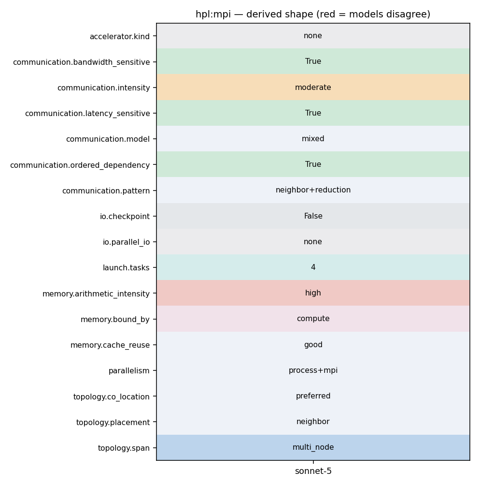

mpirun -np 4 xhpl
231 * In our case, LDU is N - Do not use the MPI datatype. 232 */ 233 if( ierr == MPI_SUCCESS ) 234 ierr = MPI_Send( Mptr( U, 0, ibufS, LDU ), lengthS*LDU, 235 MPI_DOUBLE, partner, Cmsgid, comm ); 236 #endif 237 } 238
198 if( ierr == MPI_SUCCESS ) 199 ierr = MPI_Type_commit( &type ); 200 if( ierr == MPI_SUCCESS ) 201 ierr = MPI_Recv( Mptr( U, ibuf, 0, LDU ), 1, type, 202 IPMAP[npm1-partner], Cmsgid, comm, 203 &status ); 204 if( ierr == MPI_SUCCESS ) 205 ierr = MPI_Type_free( &type ); 206 } 207 else if( partner < nprow ) 208 { 209 if( ierr == MPI_SUCCESS ) 210 ierr = MPI_Type_vector( N, lbuf, LDU, MPI_DOUBLE, 211 &type ); 212 if( ierr == MPI_SUCCESS ) 213 ierr = MPI_Type_commit( &type ); 214 if( ierr == MPI_SUCCESS ) 215 ierr = MPI_Send( Mptr( U, ibuf, 0, LDU ), 1, type, 216 IPMAP[npm1-partner], Cmsgid, comm ); 217 if( ierr == MPI_SUCCESS ) 218 ierr = MPI_Type_free( &type ); 219 } 220 } 221 }
307 ============================================================== 308 Guide lines: 309 310 1) Figure out a good block size for the matrix-matrix 311 multiply routine. The best method is to try a few out. If you 312 happen to know the block size used by the matrix-matrix 313 multiply routine, a small multiple of that block size will do 314 fine. 315 316 HPL uses the block size NB for the data distribution as well 317 as for the computational granularity. From a data 318 distribution point of view, the smallest NB, the better the 319 load balance. You definitely want to stay away from very 320 large values of NB. From a computation point of view, a too 321 small value of NB may limit the computational performance by 322 a large factor because almost no data reuse will occur in the 323 highest level of the memory hierarchy. The number of messages 324 will also increase. Efficient matrix-multiply routines are 325 often internally blocked. Small multiples of this blocking 326 factor are likely to be good block sizes for HPL. The bottom 327 line is that "good" block sizes are almost always in the 328 [32..256] interval. The best values depend on the computation 329 / communication performance ratio of your system. To a much 330 less extent, the problem size matters as well. Say for
319 load balance. You definitely want to stay away from very 320 large values of NB. From a computation point of view, a too 321 small value of NB may limit the computational performance by 322 a large factor because almost no data reuse will occur in the 323 highest level of the memory hierarchy. The number of messages 324 will also increase. Efficient matrix-multiply routines are 325 often internally blocked. Small multiples of this blocking 326 factor are likely to be good block sizes for HPL. The bottom 327 line is that "good" block sizes are almost always in the
126 if( ierr == MPI_SUCCESS ) 127 ierr = MPI_Type_commit( &type ); 128 if( ierr == MPI_SUCCESS ) 129 ierr = MPI_Send( (void *)(SBUF), 1, type, DEST, STAG, COMM ); 130 if( ierr == MPI_SUCCESS ) 131 ierr = MPI_Type_free( &type ); 132 #else
149 150 if( rank == root ) 151 { 152 ierr = MPI_Send( _M_BUFF, _M_COUNT, _M_TYPE, MModAdd1( rank, 153 size ), msgid, comm ); 154 } 155 else 156 { 157 prev = MModSub1( rank, size ); 158 159 ierr = MPI_Iprobe( prev, msgid, comm, &go, &PANEL->status[0] ); 160 161 if( ierr == MPI_SUCCESS ) 162 { 163 if( go != 0 ) 164 { 165 ierr = MPI_Recv( _M_BUFF, _M_COUNT, _M_TYPE, prev, msgid, 166 comm, &PANEL->status[0] ); 167 next = MModAdd1( rank, size ); 168 if( ( ierr == MPI_SUCCESS ) && ( next != root ) ) 169 { 170 ierr = MPI_Send( _M_BUFF, _M_COUNT, _M_TYPE, next, 171 msgid, comm ); 172 }
165 (size_t)(mat.ld+1) * (size_t)(mat.nq) ) * 166 sizeof(double) ); 167 info[0] = (vptr == NULL); info[1] = myrow; info[2] = mycol; 168 (void) HPL_all_reduce( (void *)(info), 3, HPL_INT, HPL_max, 169 GRID->all_comm ); 170 if( info[0] != 0 ) 171 { 172 if( ( myrow == 0 ) && ( mycol == 0 ) ) 173 HPL_pwarn( TEST->outfp, __LINE__, "HPL_pdtest", 174 "[%d,%d] %s", info[1], info[2], 175 "Memory allocation failed for A, x and b. Skip." ); 176 (TEST->kskip)++; 177 /* some processes might have succeeded with allocation */ 178 if (vptr) free(vptr); 179 return; 180 } 181 /* 182 * generate matrix and right-hand-side, [ A | b ] which is N by N+1. 183 */ 184 mat.A = (double *)HPL_PTR( vptr, 185 ((size_t)(ALGO->align) * sizeof(double) ) ); 186 mat.X = Mptr( mat.A, 0, mat.nq, mat.ld ); 187 HPL_pdmatgen( GRID, N, N+1, NB, mat.A, mat.ld, HPL_ISEED ); 188 #ifdef HPL_CALL_VSIPL
147 rank = PANEL->grid->mycol; comm = PANEL->grid->row_comm; 148 root = PANEL->pcol; msgid = PANEL->msgid; 149 150 if( rank == root ) 151 { 152 ierr = MPI_Send( _M_BUFF, _M_COUNT, _M_TYPE, MModAdd1( rank, 153 size ), msgid, comm ); 154 } 155 else 156 { 157 prev = MModSub1( rank, size ); 158 159 ierr = MPI_Iprobe( prev, msgid, comm, &go, &PANEL->status[0] ); 160 161 if( ierr == MPI_SUCCESS ) 162 { 163 if( go != 0 ) 164 { 165 ierr = MPI_Recv( _M_BUFF, _M_COUNT, _M_TYPE, prev, msgid, 166 comm, &PANEL->status[0] ); 167 next = MModAdd1( rank, size ); 168 if( ( ierr == MPI_SUCCESS ) && ( next != root ) ) 169 { 170 ierr = MPI_Send( _M_BUFF, _M_COUNT, _M_TYPE, next,
131 HPL_T_panel * 132 ) ); 133 134 int HPL_binit_1ring STDC_ARGS( ( HPL_T_panel * ) ); 135 int HPL_bcast_1ring STDC_ARGS( ( HPL_T_panel *, int * ) ); 136 int HPL_bwait_1ring STDC_ARGS( ( HPL_T_panel * ) ); 137 138 int HPL_binit_1rinM STDC_ARGS( ( HPL_T_panel * ) ); 139 int HPL_bcast_1rinM STDC_ARGS( ( HPL_T_panel *, int * ) ); 140 int HPL_bwait_1rinM STDC_ARGS( ( HPL_T_panel * ) ); 141 142 int HPL_binit_2ring STDC_ARGS( ( HPL_T_panel * ) ); 143 int HPL_bcast_2ring STDC_ARGS( ( HPL_T_panel *, int * ) ); 144 int HPL_bwait_2ring STDC_ARGS( ( HPL_T_panel * ) ); 145 146 int HPL_binit_2rinM STDC_ARGS( ( HPL_T_panel * ) ); 147 int HPL_bcast_2rinM STDC_ARGS( ( HPL_T_panel *, int * ) ); 148 int HPL_bwait_2rinM STDC_ARGS( ( HPL_T_panel * ) ); 149 150 int HPL_binit_blong STDC_ARGS( ( HPL_T_panel * ) ); 151 int HPL_bcast_blong STDC_ARGS( ( HPL_T_panel *, int * ) ); 152 int HPL_bwait_blong STDC_ARGS( ( HPL_T_panel * ) ); 153 154 int HPL_binit_blonM STDC_ARGS( ( HPL_T_panel * ) );
147 rank = PANEL->grid->mycol; comm = PANEL->grid->row_comm; 148 root = PANEL->pcol; msgid = PANEL->msgid; 149 150 if( rank == root ) 151 { 152 ierr = MPI_Send( _M_BUFF, _M_COUNT, _M_TYPE, MModAdd1( rank, 153 size ), msgid, comm ); 154 } 155 else 156 { 157 prev = MModSub1( rank, size ); 158 159 ierr = MPI_Iprobe( prev, msgid, comm, &go, &PANEL->status[0] ); 160 161 if( ierr == MPI_SUCCESS ) 162 { 163 if( go != 0 ) 164 { 165 ierr = MPI_Recv( _M_BUFF, _M_COUNT, _M_TYPE, prev, msgid, 166 comm, &PANEL->status[0] ); 167 next = MModAdd1( rank, size ); 168 if( ( ierr == MPI_SUCCESS ) && ( next != root ) ) 169 { 170 ierr = MPI_Send( _M_BUFF, _M_COUNT, _M_TYPE, next,
165 (size_t)(mat.ld+1) * (size_t)(mat.nq) ) * 166 sizeof(double) ); 167 info[0] = (vptr == NULL); info[1] = myrow; info[2] = mycol; 168 (void) HPL_all_reduce( (void *)(info), 3, HPL_INT, HPL_max, 169 GRID->all_comm ); 170 if( info[0] != 0 ) 171 { 172 if( ( myrow == 0 ) && ( mycol == 0 ) ) 173 HPL_pwarn( TEST->outfp, __LINE__, "HPL_pdtest", 174 "[%d,%d] %s", info[1], info[2], 175 "Memory allocation failed for A, x and b. Skip." ); 176 (TEST->kskip)++; 177 /* some processes might have succeeded with allocation */ 178 if (vptr) free(vptr); 179 return; 180 } 181 /* 182 * generate matrix and right-hand-side, [ A | b ] which is N by N+1. 183 */ 184 mat.A = (double *)HPL_PTR( vptr, 185 ((size_t)(ALGO->align) * sizeof(double) ) ); 186 mat.X = Mptr( mat.A, 0, mat.nq, mat.ld ); 187 HPL_pdmatgen( GRID, N, N+1, NB, mat.A, mat.ld, HPL_ISEED ); 188 #ifdef HPL_CALL_VSIPL
613 /* 614 * Check for error on reading input file 615 */ 616 (void) HPL_all_reduce( (void *)(&error), 1, HPL_INT, HPL_max, 617 MPI_COMM_WORLD ); 618 if( error ) 619 { 620 if( rank == 0 ) 621 HPL_pwarn( stderr, __LINE__, "HPL_pdinfo", 622 "Illegal input in file HPL.dat. Exiting ..." ); 623 MPI_Finalize(); 624 #ifdef HPL_CALL_VSIPL 625 (void) vsip_finalize( NULL ); 626 #endif 627 exit( 1 ); 628 } 629 /* 630 * Compute and broadcast machine epsilon 631 */ 632 TEST->epsil = HPL_pdlamch( MPI_COMM_WORLD, HPL_MACH_EPS ); 633 /* 634 * Pack information arrays and broadcast 635 */ 636 (void) HPL_broadcast( (void *)(&(TEST->thrsh)), 1, HPL_DOUBLE, 0,
110 STDC_ARGS( ( 111 HPL_T_panel * 112 ) ); 113 int HPL_bcast 114 STDC_ARGS( ( 115 HPL_T_panel *, 116 int * 117 ) ); 118 int HPL_bwait 119 STDC_ARGS( ( 120 HPL_T_panel * 121 ) ); 122 int HPL_packL 123 STDC_ARGS( ( 124 HPL_T_panel *, 125 const int, 126 const int, 127 const int 128 ) ); 129 void HPL_copyL 130 STDC_ARGS( ( 131 HPL_T_panel * 132 ) ); 133
23 "make arch=Linux_PII" 24 This creates the executable file bin/Linux_PII/xhpl. 25 26 4) Quick check: run a few tests: 27 28 cd bin/<arch> 29 mpirun -np 4 xhpl 30 31 5) Tuning: Most of the performance parameters can be tuned, 32 by modifying the input file bin/HPL.dat. See the file TUNING
32 top-level directory. Then, I type "make arch=Linux_PII". This 33 creates the executable file bin/Linux_PII/xhpl. 34 35 <LI>Quick check: run a few tests (assuming you have 4 nodes for 36 interactive use) by issuing the following commands from the top 37 level directory: "cd bin/<arch> ; mpirun -np 4 xhpl". This 38 should produce quite a bit of meaningful output on the screen. 39 40 <LI>Most of the performance parameters can be tuned, by modifying 41 the input file bin/<arch>/HPL.dat. See the
307 ============================================================== 308 Guide lines: 309 310 1) Figure out a good block size for the matrix-matrix 311 multiply routine. The best method is to try a few out. If you 312 happen to know the block size used by the matrix-matrix 313 multiply routine, a small multiple of that block size will do 314 fine. 315 316 HPL uses the block size NB for the data distribution as well 317 as for the computational granularity. From a data 318 distribution point of view, the smallest NB, the better the 319 load balance. You definitely want to stay away from very 320 large values of NB. From a computation point of view, a too 321 small value of NB may limit the computational performance by 322 a large factor because almost no data reuse will occur in the 323 highest level of the memory hierarchy. The number of messages 324 will also increase. Efficient matrix-multiply routines are 325 often internally blocked. Small multiples of this blocking 326 factor are likely to be good block sizes for HPL. The bottom 327 line is that "good" block sizes are almost always in the 328 [32..256] interval. The best values depend on the computation 329 / communication performance ratio of your system. To a much 330 less extent, the problem size matters as well. Say for
314 fine. 315 316 HPL uses the block size NB for the data distribution as well 317 as for the computational granularity. From a data 318 distribution point of view, the smallest NB, the better the 319 load balance. You definitely want to stay away from very 320 large values of NB. From a computation point of view, a too 321 small value of NB may limit the computational performance by 322 a large factor because almost no data reuse will occur in the 323 highest level of the memory hierarchy. The number of messages 324 will also increase. Efficient matrix-multiply routines are 325 often internally blocked. Small multiples of this blocking 326 factor are likely to be good block sizes for HPL. The bottom 327 line is that "good" block sizes are almost always in the
167 * All communicator, leave if I am not part of this grid. Creation of the 168 * row- and column communicators. 169 */ 170 ierr = MPI_Comm_split( COMM, ( rank < nprocs ? 0 : MPI_UNDEFINED ), 171 rank, &(GRID->all_comm) ); 172 if( GRID->all_comm == MPI_COMM_NULL ) return( ierr ); 173 174 ierr = MPI_Comm_split( GRID->all_comm, myrow, mycol, &(GRID->row_comm) ); 175 if( ierr != MPI_SUCCESS ) hplerr = ierr; 176 177 ierr = MPI_Comm_split( GRID->all_comm, mycol, myrow, &(GRID->col_comm) ); 178 if( ierr != MPI_SUCCESS ) hplerr = ierr; 179 180 return( hplerr ); 181 /*
9 portable as well as freely available implementation of the 10 High Performance Computing Linpack Benchmark. 11 12 The HPL software package requires the availibility on your 13 system of an implementation of the Message Passing Interface 14 MPI (1.1 compliant). An implementation of either the Basic 15 Linear Algebra Subprograms BLAS or the Vector Signal Image 16 Processing Library VSIPL is also needed. Machine-specific as 17 well as generic implementations of MPI, the BLAS and VSIPL
104 ly useful when these nodes are themselves multi-processor 105 computers. A row-major mapping is recommended. 106 107 Line 10: This line specifies the number of process grid to 108 be runned. This number should be less than or equal to 20. 109 The first integer is significant, the rest is ignored. If the 110 line reads: 111 112 2 # of process grids (P x Q) 113 114 this means that you are willing to try 2 process grid sizes 115 that will be specified in the next line. 116 117 Line 11-12: These two lines specify the number of process 118 rows and columns of each grid you want to run on. Assuming
167 * All communicator, leave if I am not part of this grid. Creation of the 168 * row- and column communicators. 169 */ 170 ierr = MPI_Comm_split( COMM, ( rank < nprocs ? 0 : MPI_UNDEFINED ), 171 rank, &(GRID->all_comm) ); 172 if( GRID->all_comm == MPI_COMM_NULL ) return( ierr ); 173 174 ierr = MPI_Comm_split( GRID->all_comm, myrow, mycol, &(GRID->row_comm) ); 175 if( ierr != MPI_SUCCESS ) hplerr = ierr; 176 177 ierr = MPI_Comm_split( GRID->all_comm, mycol, myrow, &(GRID->col_comm) ); 178 if( ierr != MPI_SUCCESS ) hplerr = ierr; 179 180 return( hplerr ); 181 /*